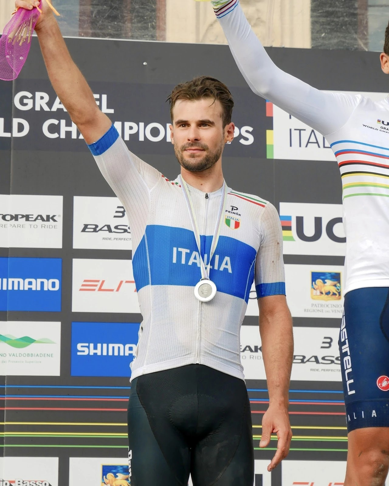

Cigala Cycling × Vivify Sports
Lista
Integratori
Supporto basato sull’evidenza per ciclisti e triatleti.

Marine Lenehan
Nutrizionista sportiva · Vivify Sports
Supporto basato sull’evidenza per ciclisti e triatleti.

Utili, ma non indispensabili ogni giorno:
Gli stessi colori della Guida Nutrizionale: verde per vitamine e minerali, arancione per i carboidrati, rosa per proteine e recupero.
Un punto di partenza generale per disciplina e durata della gara. Le scelte giuste dipendono dalla tua gara, dai tuoi esami del sangue e da cosa tolleri. Prova tutto in allenamento.

La base quotidiana, idealmente guidata dagli esami del sangue
| Integratore | Dose / dettagli | Note |
|---|---|---|
| Multivitaminico A–Z | – | Copre in generale le carenze della dieta. |
| Vitamina D (D3) | – | Salute delle ossa e difese immunitarie. Controlla i valori, soprattutto nei mesi con poco sole. |
| Omega-3 | – | Soprattutto nei periodi di carico alto o se mangi poco pesce. |
| Zinco | – | Sistema immunitario e salute maschile. |
| Enotera | – | Salute femminile. |
| Ferro | Solo in caso di carenza | Frequente nelle atlete e negli atleti di endurance. Integra solo dopo gli esami del sangue. |
| Vitamina B12 | – | Per atleti vegani e vegetariani. |
| Integratore | Dose / dettagli | Note |
|---|---|---|
| Vitamina C | – | Preferisci fonti naturali come l’acerola o direttamente dal cibo. Utile, non indispensabile ogni giorno. |
| Complesso B | – | Solo in casi specifici. Utile, non indispensabile ogni giorno. |
| Creatina monoidrato | 3–5 g al giorno, se la usi | Forza, potenza e recupero. Utile, non indispensabile ogni giorno. Può aggiungere circa 1 kg di acqua al peso. |
| Probiotici | – | Salute intestinale e viaggi. Utili, non indispensabili ogni giorno. Gli effetti dipendono dal ceppo. |
| Ashwagandha | – | Attenzione ai problemi di tiroide. Non assumerla senza consiglio di un professionista. |
Prima delle sedute dure e lunghe
| Integratore | Dose / dettagli | Note |
|---|---|---|
| Arginina | 3 g | – |
| Caffeina | 100 mg | 1 ora prima. |
| Succo di barbabietola | Che fornisca 500 mg di nitrati | Solo prima di sedute a soglia o VO2, almeno 90 minuti prima. |
| Bevanda con elettroliti | Con i liquidi prima della seduta | Utile con il caldo, per chi suda molto e sui rulli. |
Serve un protocollo specifico
| Integratore | Dose / dettagli | Note |
|---|---|---|
| Beta-alanina | – | Si assume per diverse settimane. Può dare un formicolio innocuo. |
| Creatina | – | Carico o mantenimento giornaliero, in base al piano. |
| Glicerolo | – | Iperidratazione per le gare con il caldo. Provalo in allenamento. |
| Bicarbonato di sodio | – | Tampona l’acidità negli sforzi ad alta intensità. Può dare fastidi allo stomaco: provalo in allenamento. |
| Caffeina | – | Di solito 3–6 mg/kg circa 60 minuti prima. Provala in allenamento. |
| Succo di barbabietola | – | Carico di nitrati prima della gara. |
| Elettroliti | Potassio, cloruro, calcio, magnesio, sodio | – |
Ognuno di questi richiede un protocollo individuale per dose, tempi e carico. Prova tutto in allenamento, mai per la prima volta in gara.
Energia, liquidi ed elettroliti
| Integratore | Dose / dettagli | Note |
|---|---|---|
| Gel | – | Preferisci gel da 40 g di carboidrati ciascuno. |
| Barrette ai carboidrati | – | Almeno 20 g di carboidrati per barretta. |
| Gel con carboidrati e caffeina | – | Non superare i 420 mg di caffeina per gara. |
| Gelatine ai carboidrati | – | – |
| Succo di sottaceti | – | Prevenzione dei crampi. |
| Chinino | – | Percezione della fatica. |
| Elettroliti | – | – |
| Bevanda con carboidrati | 60–120 g di carboidrati / ora | Glucosio più fruttosio per allenamenti lunghi e gare. Provala in allenamento. |
| Caramelle o chewing gum alla caffeina | – | Un’opzione ad azione rapida quando i gel sono scomodi, per esempio nella frazione di corsa del triathlon. |
| Capsule di sodio o pastiglie di sale | – | Con il caldo e per chi suda molto. Provale in allenamento. |
Dopo le gare e gli allenamenti duri o lunghi
| Integratore | Dose / dettagli | Note |
|---|---|---|
| Proteine whey (SEMPRE) | 25–30 g | – |
| L-leucina | 4 g | Se usi proteine vegane in polvere. |
| Succo di amarena | 30 ml | Corse a tappe o ritiri in altura. |
| BCAA | 1000 mg (500 mg L-leucina, 250 mg L-isoleucina, 250 mg L-valina) | Se usi proteine vegane in polvere o non puoi fare un frullato proteico. |
| Magnesio bisglicinato | 400 mg al giorno | – |
| Elettroliti | Potassio, cloruro, calcio, magnesio, sodio | – |
| Polifenoli dagli alimenti | – | Ribes nero neozelandese, succo di amarena, succo d’uva, mirtilli, frutti di bosco, quercetina. |
| Collagene | 20 g con vitamina C | Solo in blocchi di allenamento specifici, non dopo ogni uscita di scarico. |
| Bevanda di recupero con carboidrati | 1–1,2 g/kg all’ora per le prime 4 ore | Quando la prossima seduta dura è entro 8 ore. |
| Caseine | 30–40 g prima di dormire | Aiuta il recupero notturno. |
Prima fai i test. Il modo migliore per sapere se ti servono integratori sono gli esami del sangue completi.
Scegli prodotti testati per lotto. Cerca certificazioni indipendenti come Informed Sport, soprattutto se sei soggetto ai controlli antidoping.
Prova in allenamento. Non provare mai un nuovo integratore o una nuova dose per la prima volta in gara.
Chiedi a un professionista se hai problemi di salute o prendi farmaci.
Una dieta sana è sempre la prima scelta. I cibi sani forniscono tante sostanze, tra cui vitamine e minerali, che ci mantengono forti e in salute.
Non basta mangiare un’arancia o prendere una pastiglia di vitamine e aspettarsi che una dose veloce di vitamina C prevenga il raffreddore e rafforzi il sistema immunitario, per esempio. Inoltre, alcune vitamine e minerali è meglio assumerli dal cibo piuttosto che in pastiglie.
Se vuoi consigli più personalizzati sugli integratori, VIVIFY SPORTS può offrirti una valutazione nutrizionale completa. Gli integratori servono a sostenere l’allenamento. Se presi nel modo sbagliato possono addirittura essere dannosi e peggiorare la prestazione.